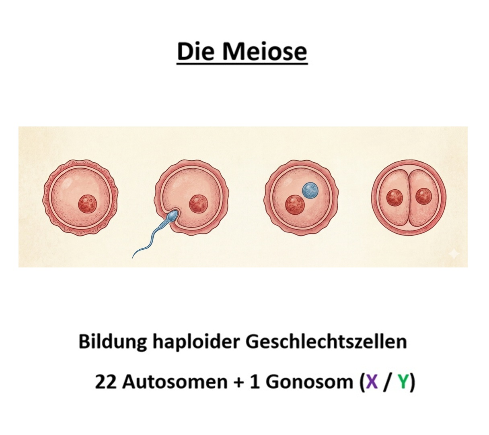
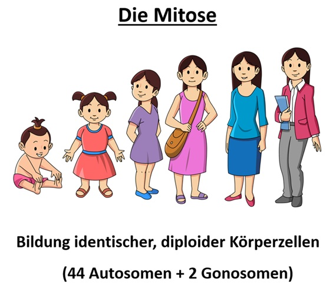

Compared with spermatogenesis, in which four equivalent gametes are formed, oogenesis produces one egg cell and three polar bodies.
Monosomy means that the zygote is missing one chromosome from a homologous pair. Instead of 2n, it has 2n−1.
It typically arises when, during meiosis, non-disjunction causes a gamete to receive no chromosome from that pair (a nullisomic gamete: with n=1, that means 0 instead of 1 chromosome from this pair).
Why are the red-marked examples monosomies?
In the marked cases, the gamete contains no chromosome from this autosome pair. After fertilization by a sperm cell (with 1 chromosome from this pair), the zygote contains only 1 instead of 2 chromosomes - this is a monosomy (2n−1).
Note: in a trisomy, the opposite happens - the gamete contains 2 instead of 1 chromosome from this pair (zygote: 2n+1).
Trisomy means that one chromosome is present three times in the zygote. Instead of 2n, the zygote has 2n+1.
It typically arises when non-disjunction during meiosis causes a gamete or a sperm cell to receive an additional copy of this chromosome.
Why are the marked examples trisomies?
In the marked cases there is an additional copy of this chromosome overall:
• Red: the gamete contains n+1 (two chromatids/chromosomes from this pair) and is fertilized by a normal sperm cell (n).
• Yellow: the sperm cell contains n+1 (two chromatids/chromosomes from this pair) and fuses with a normal gamete (n).
In both cases, the zygote ends up with 3 copies of this chromosome - a trisomy (2n+1).
Grade level: 9 · 12